历史地理 · 一部空间版的中国通史
地理带来差异，故事带来认同
施展用两把尺子，把中国历史重新量了一遍：一把叫地理，量的是山川如何把大地切成不同的生境；一把叫故事，量的是人如何靠叙事把陌生人变成自己人。七章就是七条山脉、七次「之变」——从青藏高原的隆起，一直写到海洋成为新的边疆。
速览 · 五分钟版
如果只读五分钟，读这三段就够了。
大山挡住水汽，放大纬度造成的气候差异，切出农耕、游牧、渔猎、商贸各不相同的生境与人群；语言让人能讲故事，故事让没有血缘的人彼此认同，形成超血缘的大规模合作。
每一次之变，都发生在一条山脉或一个地理界面上：青藏高原、太行—秦岭、祁连山、阴山、燕山、一脉河山与辽泽、河与海。旧故事装不下新人群，新故事扩容，新秩序诞生。
「地理空间只能决定人类命运的一半，还有一半要由人类自主地去把握和创造。」而文明能长到多大，最终取决于它的故事容量——这正是跋《星际幻想》要问的问题。
这不是一部断代史，也不是一部地理决定论。它是一套「空间版」的中国通史，外加一层历史哲学：先给出地理机制，再用具体的人与具体的故事把它讲圆，最后逼出一个问题——一个文明究竟能容纳多少异质的他者。
总框架 · 序
山川叙事从来不是纯粹的地理，而是关于「谁有资格代表天下」的故事。
康熙四十八年（1709），李光地说泰山龙脉自陕西、河南而来——那是中原正统的说法。康熙断然否认，作《泰山山脉自长白山来》，亲派人在辽东与山东之间的海岛测量，把泰山接到关外。到乾隆修《西域图志》（1782），又构造出「天下诸山皆发源于冈底斯山」的官方叙事，把五岳系统升级成西起冈底斯、东达长白山的山川体系。
作者由此点题：山川被怎样叙述，本身就是政治正当性的一部分。于是全书的两条线索浮出水面。
与之并行的，是故事这一条线：语言（单词＋语法的二维结构）→ 虚构与叙事 → 超血缘认同 → 大规模合作。「人类的历史又是各种故事的竞争史」，竞争的关键是故事容量：能容纳越多异质要素的故事，越能维持大而久的秩序，也越有机会在竞争中存续。
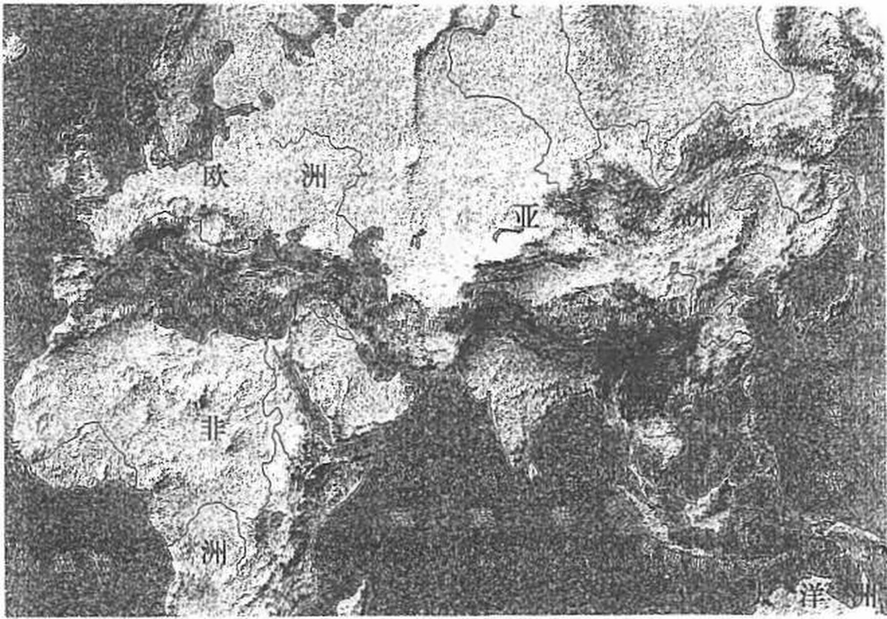
这条山系带东起兴都库什、帕米尔，西至阿尔卑斯与比利牛斯，是全书比较文明的基本舞台。作者在第 56 页把它摊开：阿特拉斯山造就了迦太基，比利牛斯山让 732 年的普瓦提埃之战终结了阿拉伯帝国的西进；阿尔卑斯山隔开地中海气候与海洋性气候，也隔开了南边的教皇与北边的皇帝——「西欧历史演化的首要动力，来自政教关系之张力；亚欧大陆其余地区历史演化的首要动力，则来自农牧关系之张力。」
总框架 · 中国棋盘
全书最重要的一张「底图」，出现在第一章第四节。
亚洲大陆三面受挤压：太平洋板块向西俯冲，劳亚古陆向南挤，冈瓦纳古陆向北俯冲。三股力量在中国大地上压出西北—东南与东北—西南两组构造带，交织成一张「棋盘状的构造网」，把中国切成中原、草原、西域、高原几个大板块。
示意图：据第一章第四节文字描述绘制，非地理投影，仅供理解「三横三纵」的结构。
由这张棋盘，派生出全书反复使用的几组「空间语法」：
作者据此给出全书使用频率最高的解释装置：「每一组东西、南北关系中的过渡地带，都是新秩序的创生线。」因为过渡地带的人同时理解两套逻辑，才设计得出双方都能接受的复合秩序。
总框架 · 三组农牧关系
农牧关系是构建秩序时的第一问题，而三组农牧关系会连锁反应。
规模最大的一组。轴心在阴山、河套与长城一线。「对东亚大陆来说，农牧关系是构建秩序时的第一问题，其他问题都从属于这个大问题。」
轴心在呼罗珊——「对伊朗高原的意义，颇类似于河套地区对中原的意义」。琐罗亚斯德教与伊斯兰的东进都从这里出发。
轴心是君士坦丁堡与维也纳两座要塞，贝尔格莱德是前线。「欧洲文明是反对亚洲人入侵的长期斗争的成果。」
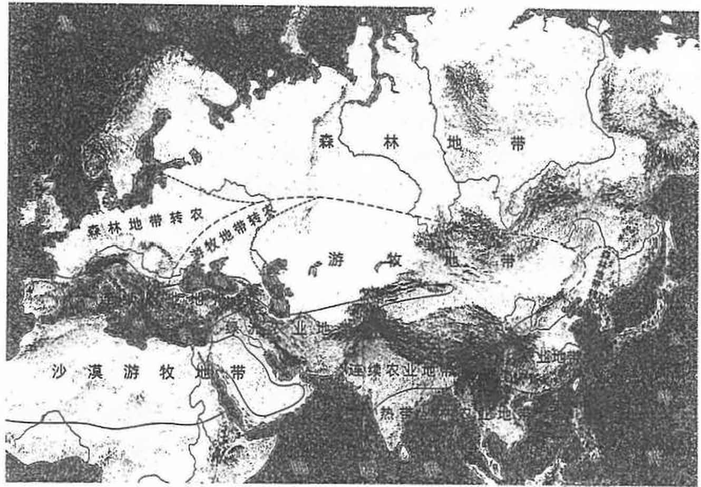
三组关系不是彼此孤立：东亚农牧冲突的超大规模性，常常把失败者向西推（匈奴—突厥—蒙古），引发中西部连锁演化，再反作用回东部；而西迁的人群又常以新的身份回来——月氏西迁后作为佛教的传播者返回东亚，突厥西迁后作为伊斯兰战士冲击欧洲。
总框架 · 七章提纲
每一章＝一条山脉／一个地理界面＋一次历史转型。章名取自古诗，正文却是一套制度史。
从康熙、乾隆的两套山川叙事讲起，提出「地理—故事」双坐标。
高原隆起 → 季风与三大气候区；语言与故事 → 超血缘合作；轴心突破 → 反思性。全书的方法论在此。
封建、宗法、礼乐的「天下」→ 官僚、郡县、事功的「帝国」。「中原为资，边缘为基。」
单一中原帝国 → 农牧复合帝国。走廊地带长出整合者，制度成功即失败之因。
中原帝国 → 胡汉二元帝国。正当性缺口逼出「戎神—戎君」，关陇集团做出隋唐。
豪族社会 → 平民社会；单一帝国 → 辽金元式复合帝国。首都东移，燕山关乎帝国生死。
农牧整合到极致：满蒙藏政教二道、空前大一统，也空前僵死。
大陆帝国 → 海陆二元现代国家。水与土的主客易位，就是古今之变。
从「地出」与「奥陌陌」回到书名：什么才是一个文明的真正容量？
PROLOGUE
两套龙脉，两种天下
序言是一场关于「谁有资格代表天下」的较量。康熙用《泰山山脉自长白山来》把泰山接进关外，乾隆用《西域图志》把天下诸山收归冈底斯。两次都是测量，两次都是叙事——而叙事本身就是权力的形状。
作者的收束极漂亮：康熙在版图上追问泰山龙脉的那个夜晚（1709 年 2 月），南太平洋一座无人岛上，被遗弃四年的苏格兰水手塞尔扣克正在独自求生——他就是《鲁滨孙漂流记》的原型。
这一对照埋下了全书的方法：制度的宏大叙事，与个体的顽强求生，必须同时在场，历史才不是一张平面图。
CHAPTER ONE · 天地之变
青藏高原惊天地之变
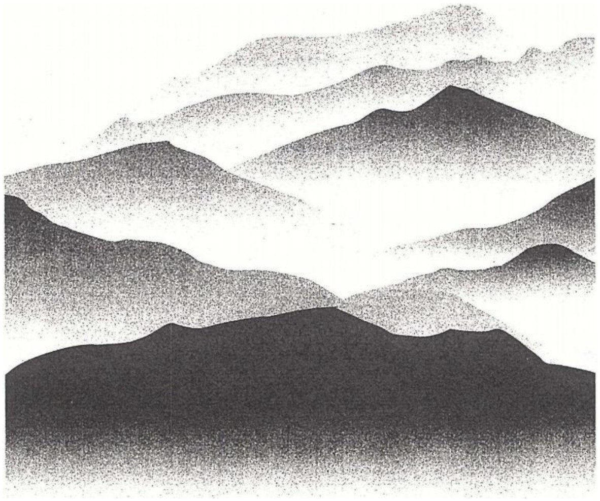
这是全书的「操作系统」，也是最不像历史、最像自然史的一章。它先讲一块高原怎样长出来，再讲人怎样长出语言、故事与时间感，最后告诉你：这一切决定了此后两千年的棋该怎么下。
印度板块撞上来，青藏高原经历三次隆起、两次夷平。最后一次分三幕：约 360—170 万年前的「青藏运动」，高原抬到 2000 米；约 110—60 万年前的「昆仑—黄河运动」，抬到 3000 米以上，昆仑山出现，黄河溯源的侵蚀也追了上来；约 15 万年前的「共和运动」，抬到 4000—4500 米。
恐龙时代的中国是东高西低，大河向西流入特提斯洋；高原隆起之后「天倾西北，地陷东南」，大河集体改向东流，于是有了西高东低的三级阶梯。作者在此埋下全书最长的一条伏笔：「再过千百万年，三大阶梯间长城蜿蜒而行，农耕与游牧两大族群依此线而对峙。」
帕米尔山结向东展开天山、昆仑、喀喇昆仑、喜马拉雅，向西接兴都库什。世界屋脊成了亚洲水塔：长江黄河养活中原，澜沧江怒江伊洛瓦底江流向东南亚，雅鲁藏布江恒河印度河滋养印度，祁连山的石羊河、黑河、疏勒河与塔里木河、阿姆河、锡尔河则串起绿洲文明。
更有意思的是风。北纬 30° 两侧本是干旱带，中东、北非、澳洲都是沙漠，江南却烟雨富庶——因为高原恰好处在副热带高压带的纬度上，又面朝最大的洋面，「横向的海陆效应和纵向的高原效应相叠加，形成了世界上最强大的亚洲季风」。约 260 万年前高原长到 2000 米，季风系统成形，中国被切成东部季风区、西北干旱半干旱区、青藏高寒区。
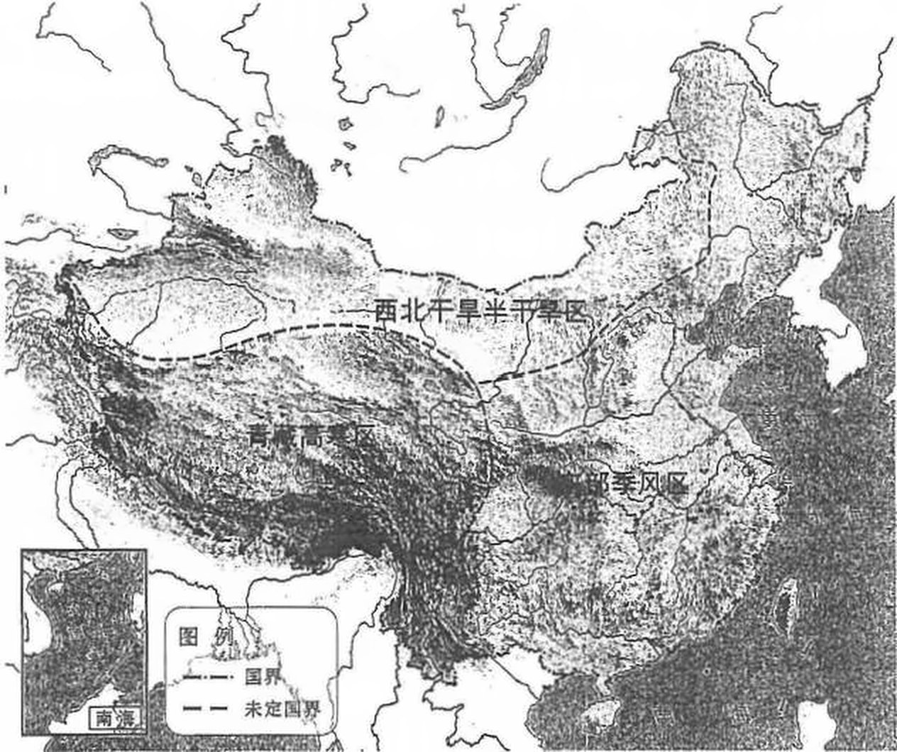
人类三拨走出非洲，节奏与高原隆起若合符节。约 100 万年前 FOXP2 基因的两个碱基突变，给了人语言能力：「语言并不是在古人类聒噪的吱呀叫喊中逐渐发展起来的，相反，它是一种天赋的本能。」单词与语法构成二维结构，有限的词因此能组合出无限的意思——黑猩猩能学上百个单词，却学不会语法。
约 30 万年前 MEF2A 基因突变，让现代人的大脑发育延迟三四年，可塑性更强，于是有了创造力。尼安德特人「有漂亮的石器，却是愚蠢的工匠」；克罗马农人却画出了拉斯科与阿尔塔米拉。毕加索说：「阿尔塔米拉之后，一切皆是衰退。」
然后是全章最动人的一节——「第一个故事：远古的星辰」。古希腊的七姐妹，中国的七仙女，澳洲、美洲、非洲、南洋的土著，都说那是七颗星，可今天只能看到六颗。天文学计算证实：十万年前的东非，肉眼确实能看见七颗，另两颗后来靠得太近；而 1.7 万年前的拉斯科洞窟壁画上，已经只画了六颗。
约 1.29 万年前，一颗约 1500 米大小的彗星撞在格陵兰，留下 31 公里的坑，「新仙女木事件」让气温骤降 6℃、持续千年。约 7500 年前，地中海海水冲破博斯普鲁斯海峡灌入黑海，成为西亚大洪水故事的原型。各大陆的洪水神话结构惊人一致：幸福被猝然打断、浩劫、英雄携种子与动物幸存、重新繁衍——「这种故事结构，似乎在暗示洪水过后的农业革命」。
农业革命的四个源发地——肥沃新月带、燕山南麓、洞庭湖西岸、中美洲——有一个共同特征：山水交错、生态过渡。多物种可以试错，多种生计可以互补。「山水交错、多元生境的过渡地带，是重要的制度创生地，是解读人类历史演化动力机制的核心线索。」
再往后是「轴心突破」：公元前 800—前 200 年，孔孟老庄、奥义书与佛陀、琐罗亚斯德、犹太先知、希腊哲人并出。关键不是他们说了什么，而是反思性——「意识本身开始被意识，思想本身开始被思想」。前轴心的帝国像沙丁鱼群，有集体行动，却不是基于精神自觉；轴心之后的人进入有限与无限、特殊与普遍的张力，「悲剧意识是一种最为高贵的意识」。
最精妙的一节是「北辰与星际」。孔子说「为政以德，譬如北辰，居其所而众星共之」，中国政治想象的核心，是找到那个不可移易的原点，让秩序从它流溢出来。可因为岁差，北极星一直在换：克罗马农人看见的是天鹅座 δ，新仙女木时代是织女星，吉尔伽美什与法老看见天龙座 α，孔子生前是小熊座 4、身后是小熊座 β，成吉思汗以后才是勾陈一。「人们所寄托的那个带来确定秩序的原点，实际上不停在变；所谓『不可移易』，不过是人们的一种想象。」
再往前推，是时间轴的两种形状：行星尺度是循环（「五百年必有王者兴」、印度的轮回、赫拉克利特的「永恒的活火」），恒星尺度是线性（古希伯来人的创世—出伊甸—先知—末日审判）。循环教人顺应命运、向后看、保守；线性教人自主抉择、向前看、革命。
最后是「洞穴的故事」。柏拉图说人被困在洞穴里，只看见火光投在墙上的影子；作者把它改写成故事论的比喻：小容量的故事让人「向洞底越钻越深」，最终自我衰败，或被他人的故事吞并；大容量的故事则不断吸收异质要素，永远处在重构之中。
章节末尾，作者把地理与故事两条线索合上了扣：荀子说「天行有常，不为尧存，不为桀亡」，又说「明于天人之分」；尊严由自我赋予，「人的灵魂在本质上是不被物质所决定的」。苏格拉底拒绝逃走，摩西望见迦南而不得入，佛陀涅槃，孔子唱「太山坏乎！梁柱摧乎！哲人萎乎！」——「哲人先知的死亡，锁定了意义的根基。此后，历史不会消散，而会迎来新生。」
哲人其萎，其道大光
CHAPTER TWO · 周秦之变
太行山观周秦之变
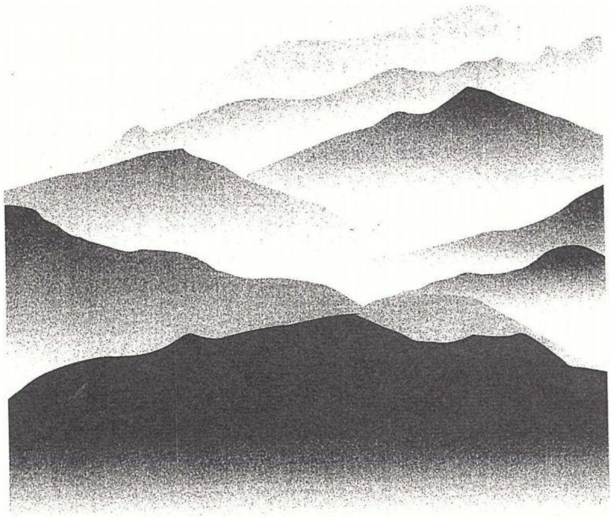
中国第一次秩序转型——从封建、宗法、礼乐的「天下」，转为官僚、郡县、事功的「帝国」——是被山河结构逼出来的。
太行八陉像一条拉链：军都陉、飞狐陉、蒲阴陉、井陉、滏口陉、白陉、太行陉、轵关陉，把山西与河北切成北中南三块，又缝在一起。上党高地「与天为党」，独占八陉之三，俯瞰洛、汴、邺、邯、襄诸都，所以叫「天下之脊」——长平之战正发生在它的狭窄通道上。
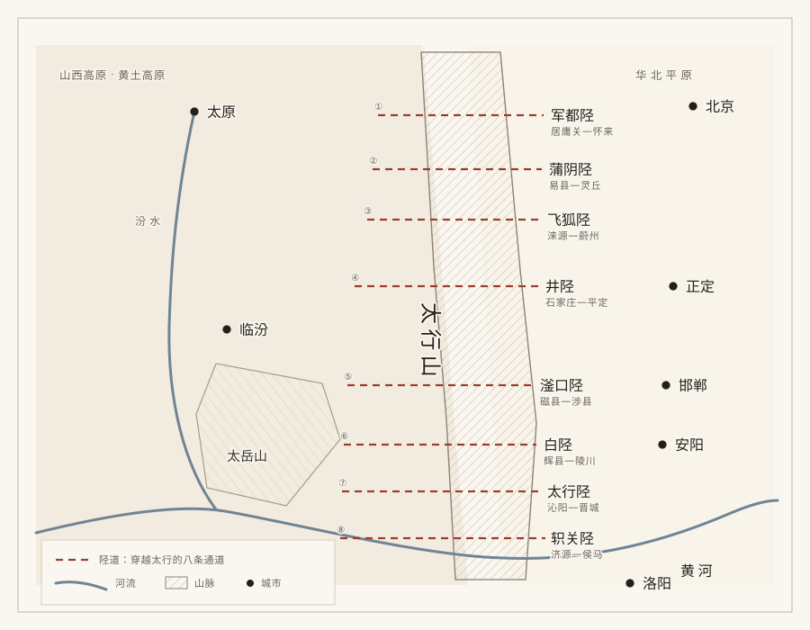
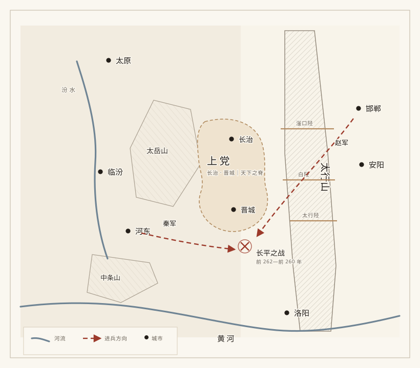
另一边是关中：四塞（函谷、大散、萧关、武关）加渭河八水，所以关中的「地势形便」，「首先在其一流的安全性」。
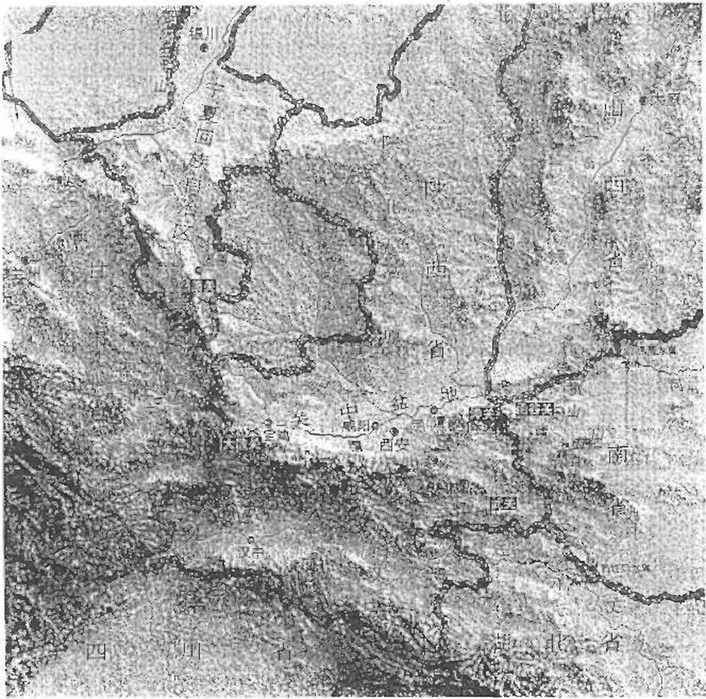
由此得出全书的地缘逻辑大反转：中原富庶，却无险可守、四战之地、对外征伐收益低；边缘有山川为险、前线单一、可以吸纳蛮族武力。
所以春秋的主线是晋楚争霸，战国的主线是秦抗六国；郑、韩这类「天下之中」的国家，只能做筹码。
制度侧的关键发明是「绝地天通」：颛顼把通神权收归君主，祭祀与战争成为国家两件事，礼乐秩序因此获得高效率、大规模、可扩展的组织逻辑。但它同时压制了个体的道德自主——「边缘被扫荡殆尽之日，就是中心自我消解之时」。
周人则用「封建亲戚，以蕃屏周」把地缘与亲属扣在一起，用《洪范》「无偏无党，王道荡荡」把天命从一族一姓转向「天下之王」。至于华夷之辨，作者提醒那是故事不是血统：周人很可能本为戎狄一支，翦商之后才构造出后稷—帝喾的谱系——「身份靠『共同记住』与『共同忘记』构建」。
轴心时代在章末并置：孔子去鲁、赵简子筑晋阳、吴越争锋，同一年发生。东方相信「人事内在于自然」，西方相信「规则外在于人事」；「秦岭之侧孕育霸王之基，太行之侧孕育霸王之资，泰山之侧孕育霸王之思」。尾声叫「困龙之地」：商纣、赵武灵王、秦始皇，都死在沙丘。
CHAPTER THREE · 内外之变
祁连山瞰内外之变
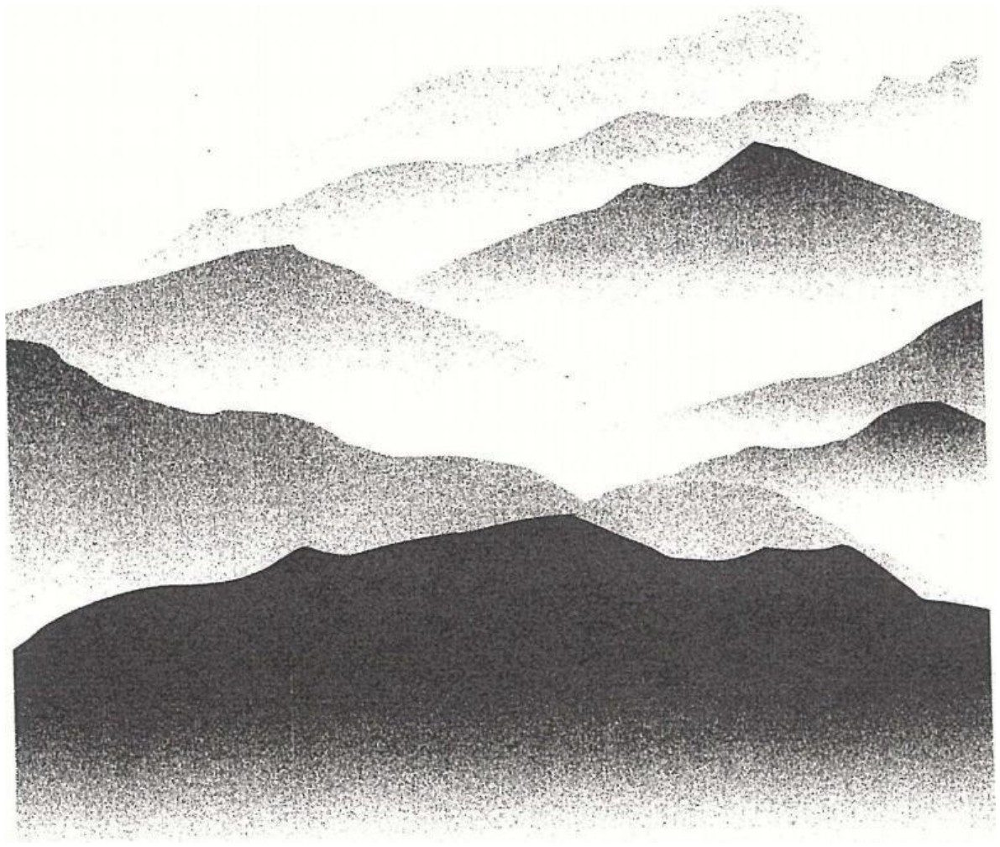
中原帝国第一次遇到一个「无法用同一套制度消化」的外部——草原，于是被逼出了多元复合帝国的雏形。
祁连山是青藏高原的北缘，山北陡然干旱，山南的雪水滋养河西走廊。四郡靠石羊河、黑河、疏勒河串成节律性的补给点，尾闾湖又成为游牧者溯流南下的入口——霍去病二征河西，走的正是这条路。金城（兰州）是「中原、西域、高原三个方向通道的交会点」。
战略递推被写成一串口诀：「欲保关中，先固陇右」→「欲保秦、陇，必固河西；欲固河西，必斥西域」。
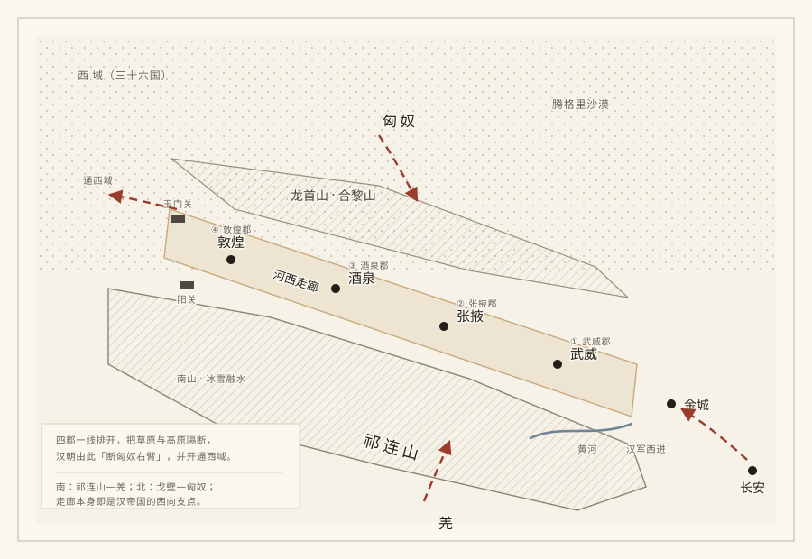
汉匈之间的「互构」是本章的机制核心。集权官僚、财政、常备军都依赖定居农耕，受 400 毫米降水线约束，所以长城与农牧线重合；草原税赋成本太高，只能熟人治理（「一百五十人以上便无法再维持熟人关系」），所以只能是散居的小部落。于是贸易还是战争，取决于中原的政治结构：
人物部分写得极好看。卫青的「不败」不是天幸，而是战法不对称——强弩、装甲与纪律被移植到骑兵身上；李广的悲剧是「同态竞争」。张骞凿空西域，作者顺手给了一个大胆猜想：「大宛」或即希腊语的「大爱奥尼亚」，东亚的农牧对抗由此接上了希腊化世界。
然后是「帝国之踵」：耕战与征兵制需要「可授之田」和有限疆域，疆域一扩、田一分尽，就只能转向募兵；募兵要财政，财政靠编户，编户被豪族吸纳则税基流失——与罗马的马略改革同构。「一个制度成功的原因往往也会成为它日后失败的缘由。」
草原的节奏同样被算得清清楚楚：兄终弟及保证单于成年可战，但「能够顺畅继承的一辈兄弟，寿命合计难以超过百年」，所以「胡虏无百年之运」；中原的嫡长制没有这个危机，却生出官僚的自我异化与周期性衰败。两条曲线互补，构成农牧共生的深层节奏。
尾声收在凉州。光武帝把凉州豪族内迁，官员内地化、不懂羌情，羌乱百年；「凉州三明」平乱即被调离，终至董卓入京。「西汉的耀眼来自它在凉州的狂飙，东汉的败亡则来自它在凉州的颓唐。」诸葛亮卒于五丈原——北伐的真实战略是取陇西、控天水、西联羌胡、再取河西良马，与隗嚣之谋同构。「祁连山将暂从历史高光中隐去，阴山将登临前台。」
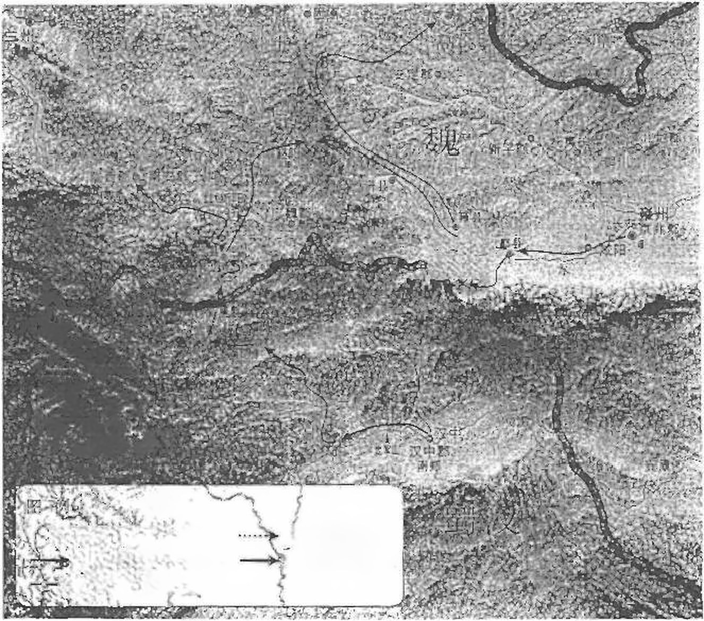
CHAPTER FOUR · 五胡之变
阴山眺五胡之变
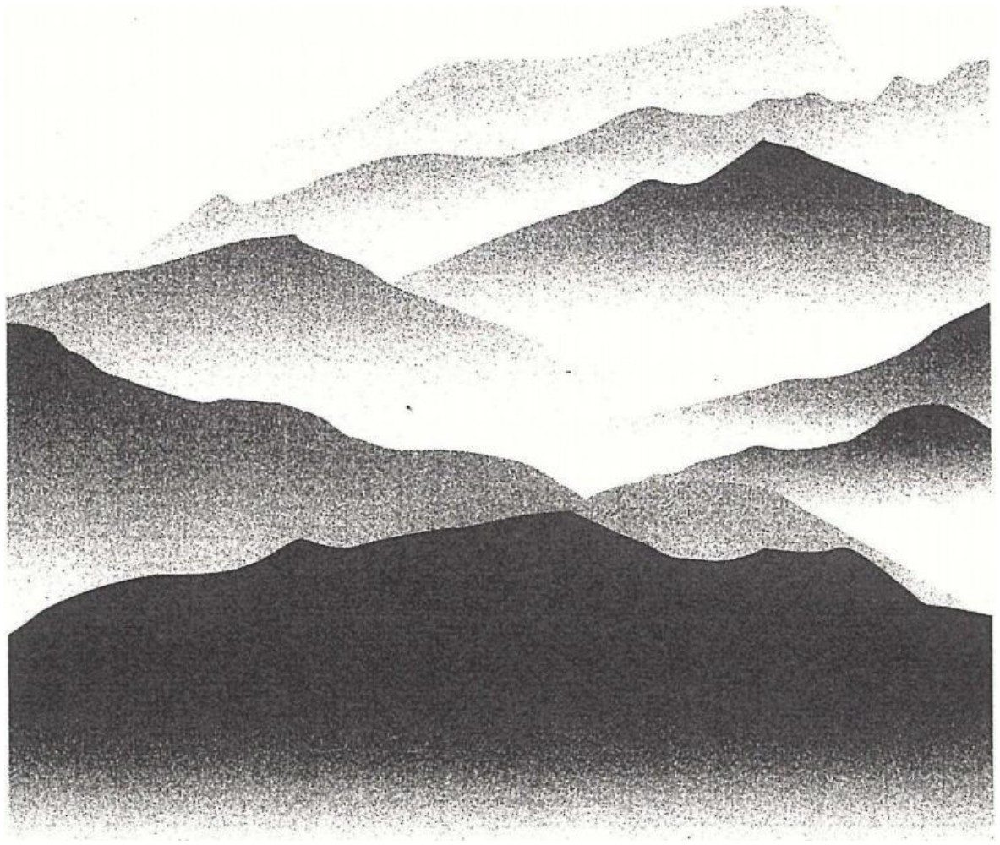
这一章要回答的问题很直接：胡人如何统治中原？答案是一项制度发明——二元帝国。
阴山东西约 1200 公里，不高，却因为纬度与内陆深度，成为季风与非季风、内流与外流的分界。「自秦汉建立大一统帝国，阴山便成为农牧恩怨的前线，持续近两千年。」同一道山，由北向南是「大自然为游牧一方所营造出的战场气势」，由南向北则是长城俯视的威压——这是全书「地理即态势」最经济的一次示范。贺兰山是十字路口，河套（西套、后套、前套）是农牧关系的棋眼。
更妙的是「天时又在定义地利」：西汉均温比明代高约 2℃，汉长城修到了阴山以北；东汉转冷，游牧者入塞——「西晋末年五胡之乱的种子就此埋下」。
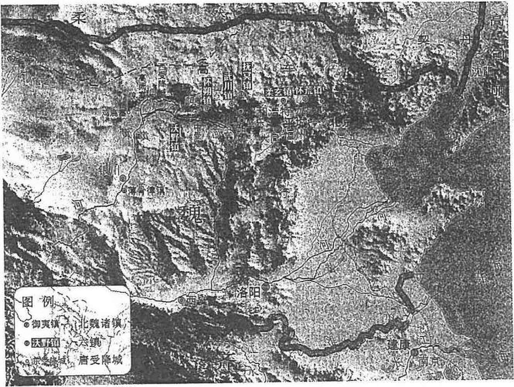
但五胡之乱的根因，作者说在中原自身：嵇康父子的困境、八王之乱、王浚引鲜卑乌桓南下、刘渊以「汉室之甥」自立、石勒全歼十万禁军。他引孟子：「人必自侮，然后人侮之。」
石勒若只依儒家则没有文化正当性，只凭血统又没有血统正当性。于是需要第二个故事来源——石虎说：「佛是戎神，正所应奉。」「戎神」配「戎君」，两难自解，「皇帝」的意涵由此突破中原的文化边界，超越胡汉。
佛教东传的路线（犍陀罗—西域—河西—平城—洛阳）也被讲成经济问题：西域长期只是「通道」，直到中原屯田带来人口爆炸（「平均增长五倍，有的绿洲人口甚至增长近十倍」），才有供养寺院的能力——「中原以物质重塑西域，西域以精神重塑中原，草原则是推动这双重重塑的发动机。」
北魏一段写得冷峻：拓跋珪离散部落、逼母杀妻、立「子贵母死」之制——「秩序往往是从带有兽性的野蛮中生长出来的；但只有人性才能让秩序持久，所以必须构造出新的故事，让人们遗忘掉兽性的过往」。六镇的逻辑与秦长城正相反：秦长城「易守难攻」、是「王者有外」；六镇「易攻难守」、是「王者无外」——「长城由此成为帝国的内部分野而非外部边界」。
关陇集团是本章的制度高潮：宇文泰以最弱之势行最彻底的改革，「阳传周礼经典制度之文，阴适关陇胡汉现状之实」——鲜卑得实质地位，汉人得名分统摄，「胡汉共生融合的秩序找到了底层模型」。同一时期的罗马，用《查士丁尼法典》完成了一次「用空间换时间」的文明保存。
最后是安史之乱。府兵制随均田制崩坏，节度使「皆依山而置」，自筹军费、以战养权，天宝末年「边将拥天下兵力八成以上」。作者说这是兵制与财政不同步的结构性结果，而真正的胜负手不在潼关，在河套与山西——郭子仪据灵州，李光弼出井陉。肃宗在灵州登基，与百余年前太宗在此称天可汗，恰成兴衰剪影。
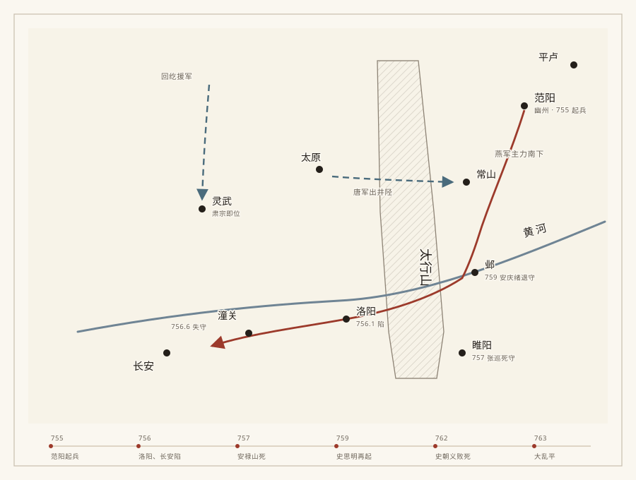
本章尾声叫「渔阳鼙鼓」，而下一章的开场，正是从这场叛乱留下的河朔藩镇开始。
CHAPTER FIVE · 唐宋之变
燕山望唐宋之变
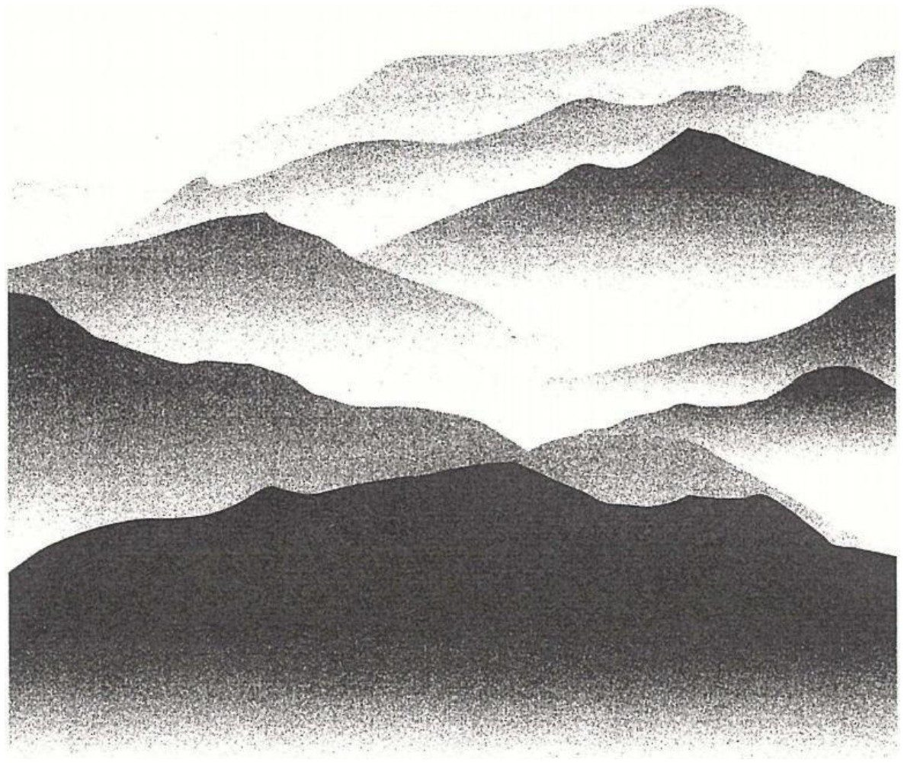
中原社会自身结构的变化——豪族变平民——如何把历史的重心从祁连山搬到了燕山。
燕山界分华北平原、蒙古草原、东北渔猎三大生境；四条廊道（古北道、卢龙道、无终道、傍海道）南北两端分别汇聚于朝阳与北京。大兴安岭—呼伦贝尔「兼跨草原带与森林区」，是「古代最重要的民族策源地」；热河三角（西拉木伦＋老哈河）「在宋代以后，成为新的历史发动机与秩序创生地」——「掌握热河者便掌握整体上的战略主动性」。
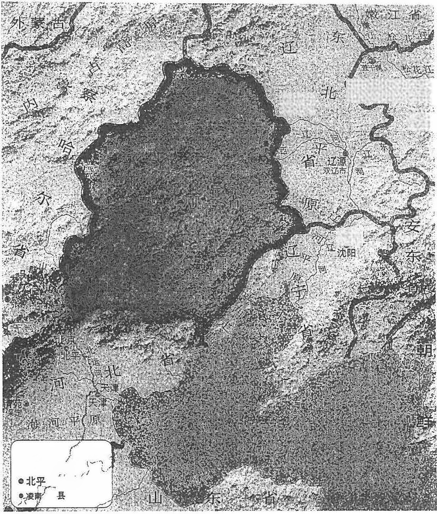
核心判断句在这里出现：「兼容农牧的二元复合型帝国，需有复数都城来整合多元板块……北京天然是复合型帝国的首都，燕山地区也因此成为帝国发动机。」
唐宋之变的实质是社会结构之变：豪族社会变为平民社会；大一统由「可逆」变为「不可逆」——「宋代以后，一个大一统崩溃了，取代它的是另一个大一统，再无长期的大分裂出现」。政治地理也从东西（关洛对关东）转为南北（江南财赋对北方军事），首都必然东移：「定都关东乃至北京后，祁连山便不再关乎帝国生死……燕山则开始关乎帝国生死。」
二元帝国在此迭代：阿保机以死亡为「祭品」突破兄终弟及——「强大的传统从来都需要昂贵的祭品才能被突破」；辽以南北面官「因俗而治」，华严宗因「胡汉内外之别皆被超越」而成为辽的精神内核；金则因领土狭长（「腰部」在燕山北麓）而陷入「热河困局」，最终「从兼容农牧的二元帝国，逐渐坍缩为以农耕为本的一元帝国」。
宗教在这一章有三条线：房山石经（幽州因藩镇割据躲过两次法难，成为辽的佛教渊源）；藏传佛教在高原兴起（「因资源稀缺，雪域高原成为古代中国唯一一个教权有机会独立于政权之外发展起来的地方」）；凉州会盟（1247）使高原第一次接受东亚帝国的直接统治，藏传佛教进入草原。忽必烈与八思巴之约则确立了「私域宗教高于政治、公域政治高于宗教」的格局。
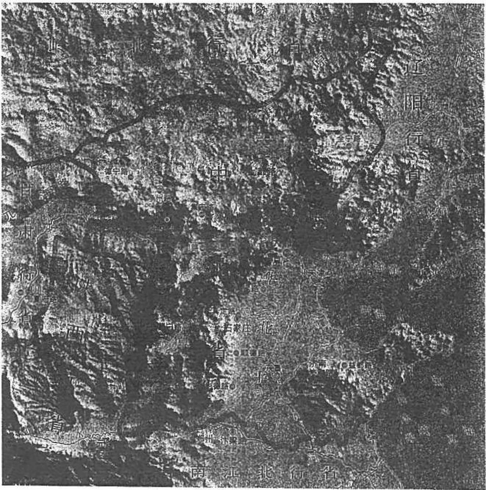
「中国」在这一章被边缘视角撑大：西夏以「西番中国」指西藏，其帝师制度为元所继承，「中国」由此「不再是局限于汉地、儒家的文化象征，而是可以兼容多元文化、复合中心的普遍秩序」；金莲川幕府把「小中国」伸展为「大中国」；明太祖承认元之正统，构想「第三次南北朝」。
草原法统的破碎同样是一条链：俺答汗以「转世」解决自身正当性（1578 年仰华寺），却打开了赠号、认汗的闸门——「各个法统的力量相互抵消……主导者将是来自侧翼的第三方」，女真因此登场。
尾声叫「波托西的诅咒」：1545 年波托西银矿被发现，白银经马尼拉流入中国；1618 年，三十年战争爆发，「七大恨」也在这年告天——「在全球化的时代，没有哪个地方的命运能够由自己来决定。」
CHAPTER SIX · 明清之变
一脉河山察明清之变
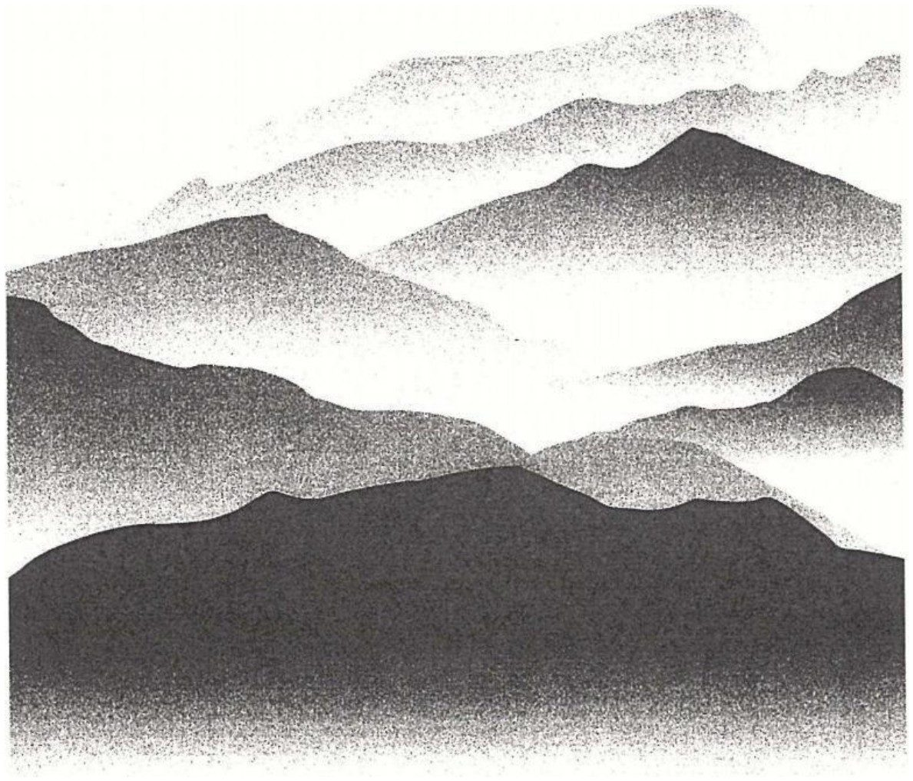
大清如何把「农牧整合」做到极致，以及这种极致如何僵死。
作者把帝国看成身体，河山是「骨相与经络」，观察单元是一条自东北贯穿西北的山脉链，加一片自大沽口到南海的海面——「一脉河山」。陆海两塞：京师北有燕山、西有太行，交于军都陉（居庸关）；东以环渤海、黄海为海塞。燕山沿渤海岸挤出「辽西走廊傍海道」，明中期以后热河失控，此线成为关内与辽河诸镇唯一的陆上通道——「京师东北的安全被寄托于如此狭窄一线，显然是脆弱的」。
辽泽是本章的空间密钥：辽河下游「地势低洼，水网纵横，河流经常改道，形成泥淖难行的辽泽」，东西南北各二百余里，清末才淤平。它以「无」隔出南道（辽阳）与北道（沈阳）——明清易代，就发生在这「有」与「无」之间。
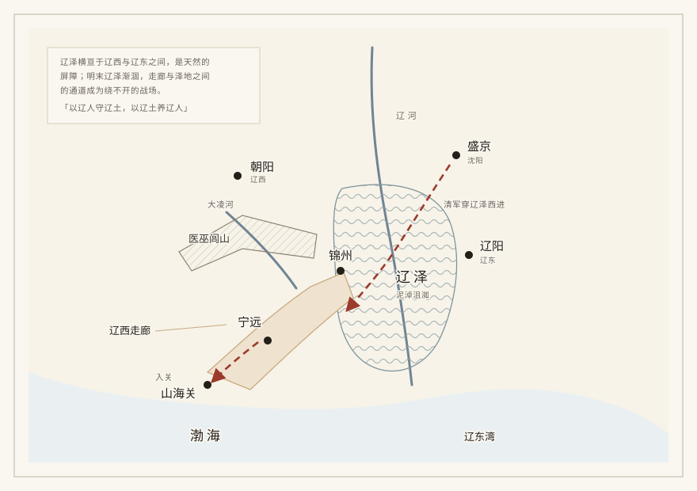
帝国瓮城有三重：阴山—贺兰是大瓮城，晋北内外长城之间是小瓮城，五台山是精神瓮城——「其地缘格局护卫京师，其精神格局连接汉、满、蒙、藏」。
技术代差是明清易代最硬的解释：宁远之战，红夷大炮重创努尔哈赤；徐光启借耶稣会网络追踪欧洲火器技术（1608 年望远镜发明，1629 年他已上书请造三架），主张「凭坚城，用大炮」；辽人因受欺凌而离心，反使「以辽人守辽土」落地；登莱之变后孔有德、耿仲明携红夷大炮降后金，皇太极遂有东亚最强的炮兵与汉军旗——「这并非因为命数，而是因为冷热兵器的代差」。
「天下道场」一节讲盛京坛城（四塔四寺、外圆内方）、「政教二道」的三重网络（敕建寺庙、驻京喇嘛、活佛体系）、四大活佛互制，以及关公如何被仪轨化为汉满蒙藏共享的符号。首都圈（北京—承德—五台山）是撬动大陆帝国的杠杆。
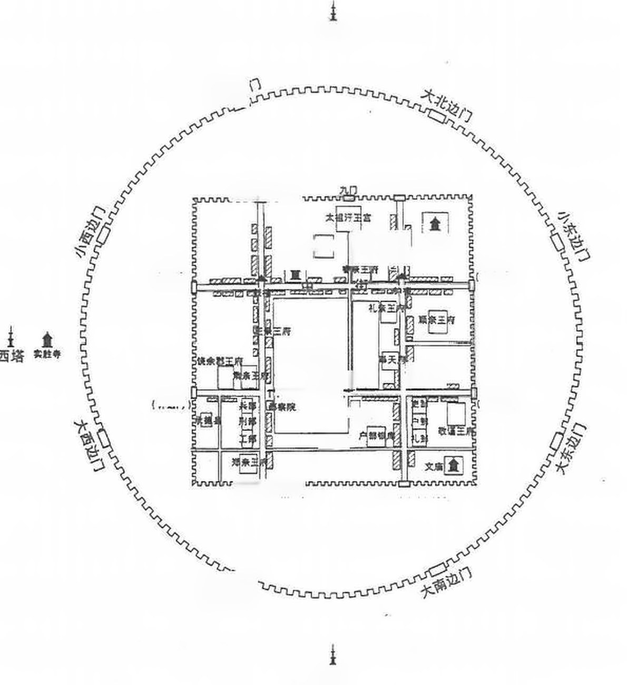
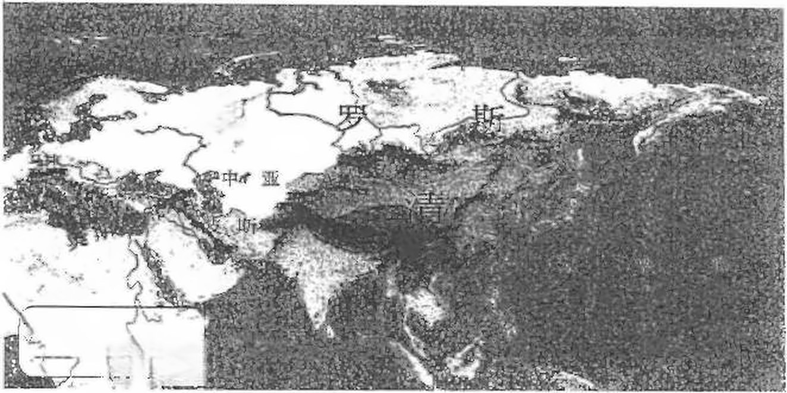
大陆帝国部分讲清朝与准噶尔的相互塑造，以及西域法统先被伊斯兰教、后被藏传佛教破碎，满洲以第三方身份层层整合（皇太极漠南、康熙漠北、雍正青海、乾隆漠西）。
晚清一节最见功力：西北史地之学（徐松、龚自珍、魏源、林则徐「为中国患者，其俄罗斯乎」）止于义理化的地理，跟不上物理化的现代地理学；英俄大博弈、阿古柏、俄「代管」伊犁、1895 年瓜分帕米尔。作者由此提出帝国空间性质的转变——由「有边疆无边界」转入「有边界无边疆」：边疆可以义理界定，边界只能物理把握，晚清交涉的被动正源于此。
尾声「山庄春秋」写承德避暑山庄：帝国的巅峰与僵死同在一处。绵密的统治术「抑制了人们的自由选择空间，也就抑制了人们的道德感」，帝国「已在过度成熟中沦入僵死」；英法联军所见，是百姓替联军挖战壕、搬云梯，指着死难同胞的脸大笑。
CHAPTER SEVEN · 古今之变
河海通古今之变
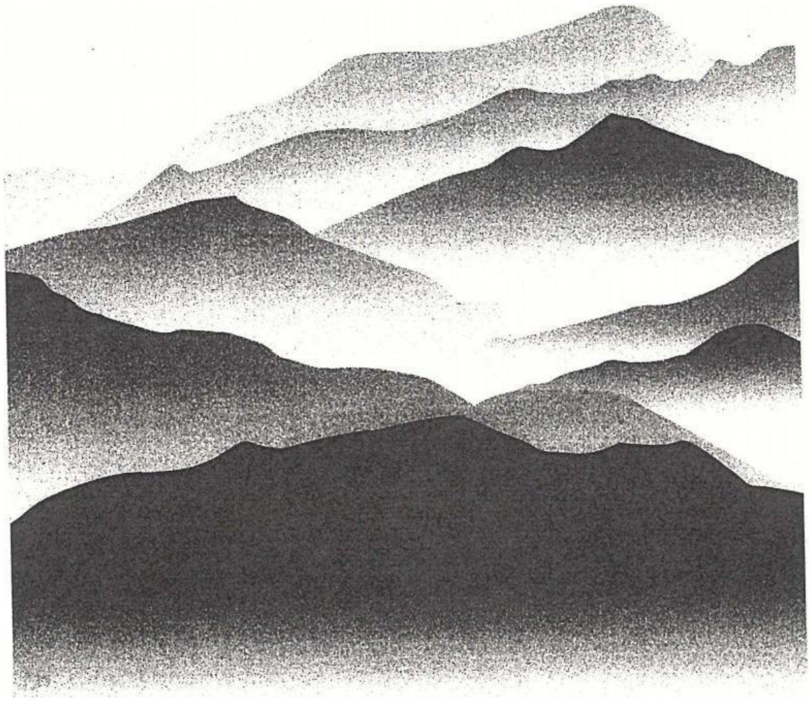
这一章的结构本身就是论点：先「陆之水」，再「陆之海」，再「海之海」，最后「海之陆」——水从从属者变成定义者，陆地由主体变成被重塑者。
「传统帝国时期，运河串联起几大水系，但它归根结底是被土定义的……水开始定义土，海洋成为全球贸易的载体。」「水与土的主客关系之转换，背后隐含的是时空的古今之转换。」四渎通济一节从济水的消失讲到黄河改道的南北极限，再讲到运河的「水脊」：泰山与南旺，「三分的水由此南下汇入泗水，七分的水由此北上」。
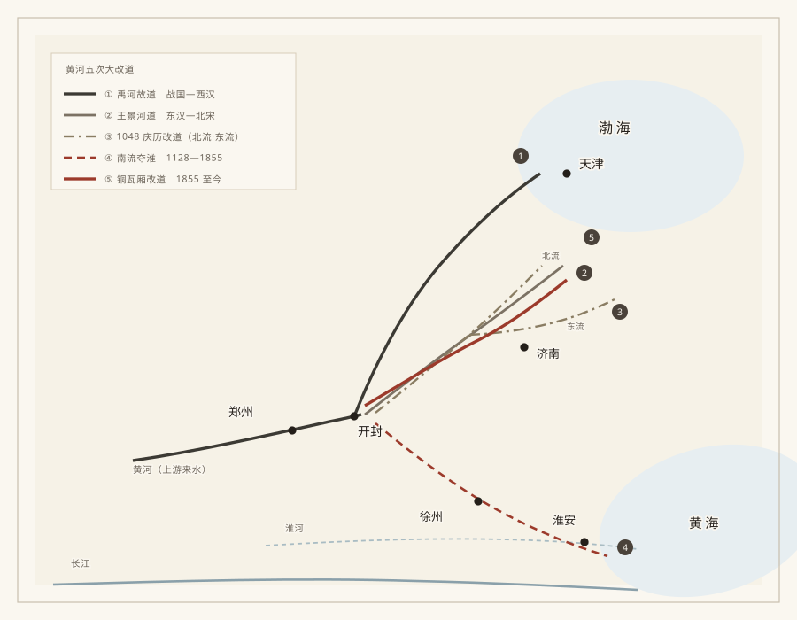
河漕与海漕之争，被还原成利益结构：海运点到点，民间无从获益；运河是漫长的经济带，能激活沿线，于是地方社会与京官合谋废海运，治河又被漕运绑架，帝国「共谋着走向保守」。
南洋绝唱一节从宗族讲起：丘陵保存宗族，宗族提供跨海信用——「汉人本身是一种复数性的存在」。南洋是「社会概念」，所以闽粤人下南洋是内部移动，北方人视之为彻底放逐。郑芝龙以海上力量换陆上身份而成功；郑成功因「反清复明」不能放弃大陆战略，终被迁海令与陆海夹击困死。
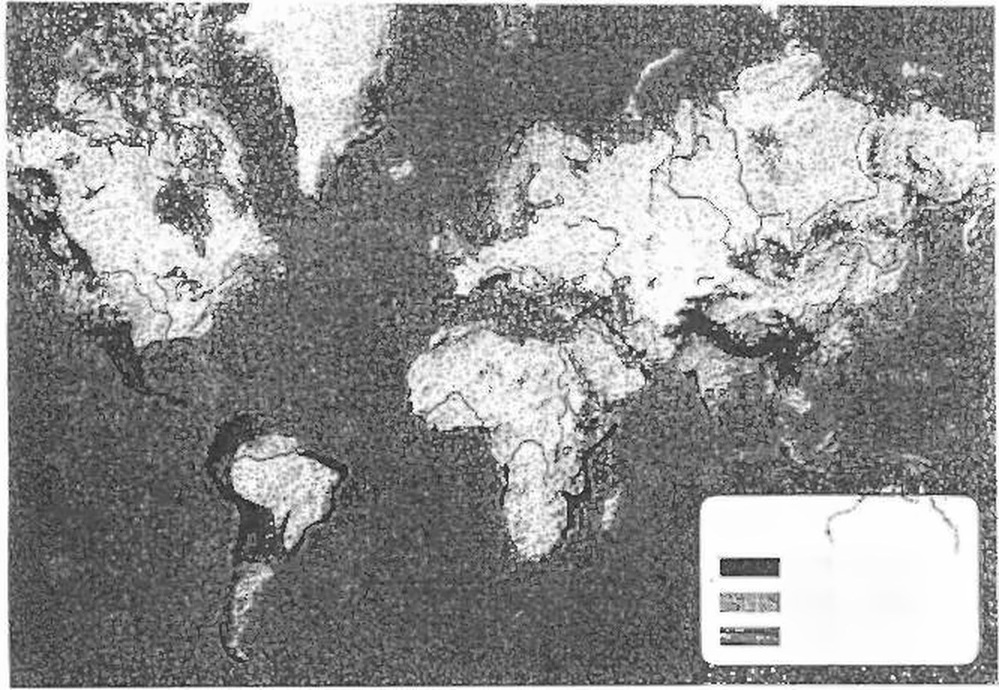
「分布秩序」一节是全书少见的政治哲学段落：海盗船的普选、罢免、舵手制衡与战时专断，是用「内在于船员」的权力对抗商船「外在于船员」的独裁——「非法的世界反而倒逼着『合法』的世界变得真正合法」；无敌舰队的失败，是陆战逻辑对海战逻辑的失败；格劳秀斯为暴力补上了正当性——「法律—规范本身像一个倍增放大器，可以让秩序的扩展远远超出暴力的覆盖半径」。
「帝国涅槃」一节写晋商以「河套—晋北走廊」为枢纽经营万里茶道与草地驼运，证明大陆社会也有开放性格；牡丹社事件暴露帝国理念与国际法理念的错位，引出海防塞防之争——李鸿章主海防，左宗棠主「海塞并重」（「重新疆者，所以保蒙古，保蒙古者，所以卫京师」）。西征之费出自海关关税与汇丰外债——「以大清帝国东部的海关作为转换枢纽，海洋世界的力量转换为大陆深处的秩序重建」。
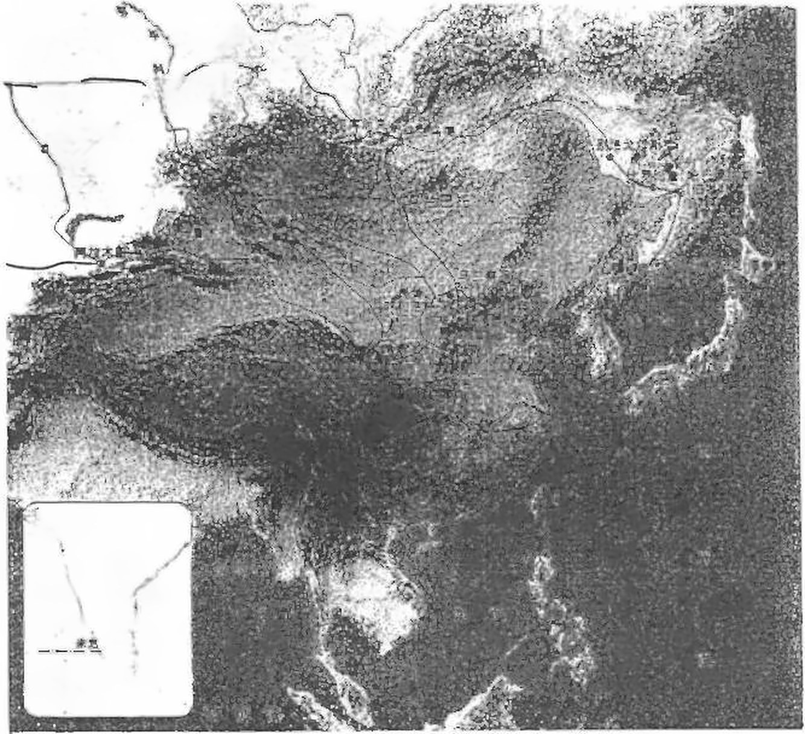
最后是「帝国死结」：热兵器使帝国板块失衡（财富、军事、人力、观念转由中原主导），满洲为自保而极端保守，庚子之乱激化革命；农牧整合到极致带来四亿人口，人口爆炸 → 劳动力便宜 → 内卷 → 无法内生工业革命。而作者给了一个不那么悲观的转折：「过剩的劳动力只有在封闭的经济体中才会导向『内卷』，一旦加入开放的全球经济体系，劳动力过剩反倒会转化为一种比较优势」——而开放，以革命为前提。
尾声「中国新生」只写了两件事：1911 年武昌枪响；1912 年 1 月 1 日孙中山就任临时大总统——「周虽旧邦，其命维新」。
EPILOGUE
什么才是一个文明的真正容量
1968 年，阿波罗 8 号的安德斯拍下「地出」。人类第一次从外面看自己的家：地球「只是飘浮在无垠太空中的脆弱灰尘」，也是「让我们盲目自大的洞穴」。
2017 年，星际天体「奥陌陌」穿过太阳系。哈佛天文系主任阿维·洛布设想：某个文明预知母星将被超新星摧毁，于是把文明种子做成千百万份，配上光帆，送往星系边缘，靠超新星爆发的能量把它们像蒲公英一样吹散到宇宙。
答案回到书名。东亚大陆有地球上最复杂的山川地理，塑造了这片土地上最跌宕的空间命运；而人要看清自己，只能通过他者。
提炼 · 六个核心命题
如果只带走六条判断，带走这六条。
「山，带来差异，带来交往的动力；水，带来连通，带来交往的可能。」气候—生境—生计—组织—观念这条链条，被落实成可检验的空间关系：隘口、走廊、绿洲、降水线、长城。地理给的是势能。
上党、河西走廊、陇西、阴山—河套、大兴安岭—热河、辽泽、关陇、南洋——过渡地带的人同时理解两套逻辑，所以设计得出双方都能接受的复合秩序。
「祀与戎」是国家的两件事；绝地天通把通神权收归君主，使礼乐秩序可获得可扩展性。暴力必须由故事赋义才能成为秩序，故事也必须靠暴力落地——「只有汉人能够提供伟大理想，只有胡人能让伟大理想化为现实」。
轴心突破带来反思性，「只有基于轴心时代的精神反思，才能把故事的特殊性上升为人性的普遍性」。容量靠吸收外来故事扩张（佛教→宋儒、关公→格萨尔），容量不足则自我封闭，「好的故事，没有定型的那一刻」。
中原以物质重塑西域，西域以精神重塑中原，草原则是发动机；高原以宗教反塑草原，海洋以贸易与规范重塑大陆。「中国」不是某个板块的自我展开，而是互构的产物——所以「长城才是中国的中心」。
征兵制→募兵制→财政→豪族→私兵；农牧整合到极致→四亿人口→内卷；帝国过度成熟→僵死→革命。而解法总是同一条：换一条生成线，把外部他者编进更大的故事。
词表 · 关键概念
读这本书时反复出现的术语，先记住它们，后面会省很多力气。
笔法 · 怎么写出来的
这本书的写法本身就是论证的一部分。
对话 · 可以商榷之处
一本有野心的书，值得被认真地质疑。
入口 · 三种读法
序 → 一章 → 二至七章。第一章是全书方法论的钥匙：读不懂第一章，后面会误以为它只是「地理决定历史」。
对哪一段历史感兴趣就读对应章：周秦→二；汉匈→三；魏晋南北朝→四；唐宋辽金→五；明清→六；晚清民国→七。
把书末地图与《中国历史地图集》对照，逐章在地图上走一遍：太行八陉、河西四郡、阴山六镇、燕山四道、辽泽两路、运河与南洋航线。
重点章：第一章（操作系统，「中国棋盘」「三组农牧关系」「洞穴的故事」三节）、第二章（方法论最集中）、第六章（解释力最强的收束）、第七章（与当下最相关）。
延伸阅读：与作者前作《枢纽》对读，本书更像它的「前传」——解释枢纽格局如何从山河中长出来；与拉铁摩尔《中国的亚洲内陆边疆》、巴菲尔德《危险的边疆》对读，看边疆视角的差异；与《中国历史地图集》对读，把文字放回地面。
附录
每章以一诗开篇，以一人开场——宏大结构必须落到具体的人身上才成立。
| 章 | 题记 | 作者 |
|---|---|---|
| 一 | 《公无渡河》 | 唐 · 李白 |
| 二 | 《人月圆 · 茫茫大块洪炉里》 | 元 · 刘因 |
| 三 | （无题记，以「李陵—苏武」序幕开篇） | —— |
| 四 | 《论诗三十首 · 其七》 | 金 · 元好问 |
| 五 | 《望蓟门》 | 唐 · 祖咏 |
| 六 | 《从军行》 | 北朝 · 卢思道 |
| 七 | 《浦子口中敌台》 | 近代 · 张謇 |
| 时间 | 事件 | 章 |
|---|---|---|
| 约 360 万年前起 | 青藏运动、昆仑—黄河运动、共和运动，高原三次隆升 | 一 |
| 约 6 万年前 | 现代人第三拨走出非洲，故事随人散播全球 | 一 |
| 约 1.29 万年前 | 新仙女木事件与全球洪水神话 | 一 |
| 约 1 万年前 | 农业革命（肥沃新月、燕山南麓、洞庭湖西岸） | 一 |
| 前 800—前 200 年 | 轴心时代 | 一、二 |
| 前 295 年 | 赵武灵王饿死沙丘 | 二 |
| 前 262—前 260 年 | 长平之战 | 二 |
| 前 221 年 | 秦统一，「周秦之变」完成 | 二 |
| 前 200 年 | 白登之围 | 三 |
| 前 138—前 126 年 | 张骞凿空西域 | 三 |
| 前 121 年 | 霍去病定河西，设四郡 | 三 |
| 89 年 | 燕然勒石 | 三 |
| 189—190 年 | 董卓入京，关东起兵 | 三 |
| 291—306 年 | 八王之乱，五胡登场 | 四 |
| 439 年 | 北魏统一北方 | 四 |
| 546 年 | 玉壁之战，《敕勒歌》 | 四 |
| 755—763 年 | 安史之乱 | 四、五 |
| 926 年 | 阿保机崩，辽立 | 五 |
| 960 年 | 陈桥兵变；喀喇汗皈依伊斯兰 | 五 |
| 1127 年 | 靖康之变 | 五 |
| 1247 年 | 凉州会盟 | 五 |
| 1368 年 | 元顺帝北奔，明立 | 五 |
| 1578 年 | 仰华寺会晤，俺答汗与索南嘉措 | 五 |
| 1619 年 | 萨尔浒之战 | 六 |
| 1626 年 | 宁远之战 | 六 |
| 1635 年 | 林丹汗死，蒙古归附 | 六 |
| 1755—1759 年 | 清平准噶尔、定西域 | 六 |
| 1840—1842 年 | 鸦片战争 | 七 |
| 1855 年 | 铜瓦厢决口，济水消失 | 七 |
| 1875—1878 年 | 左宗棠西征，海塞并重 | 七 |
| 1894—1895 年 | 甲午战争 | 七 |
| 1911—1912 年 | 辛亥革命，清帝退位 | 七 |